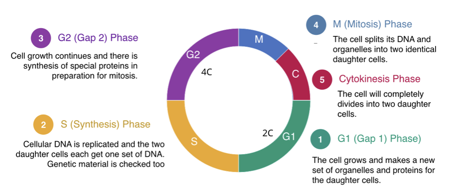
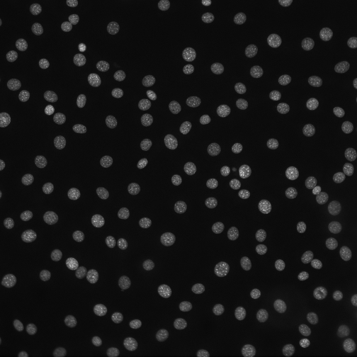
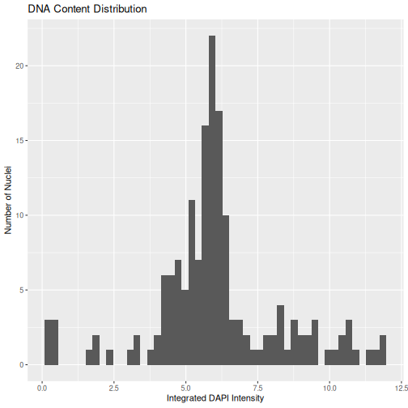
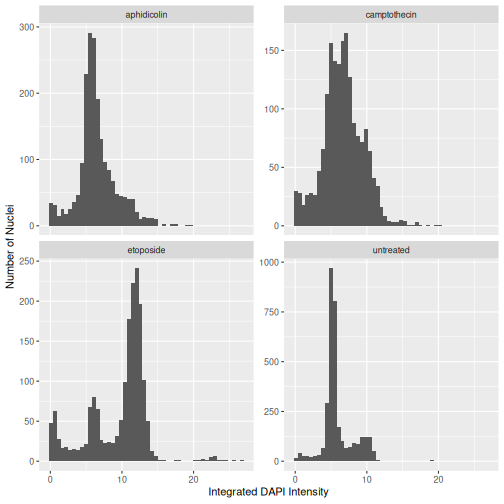
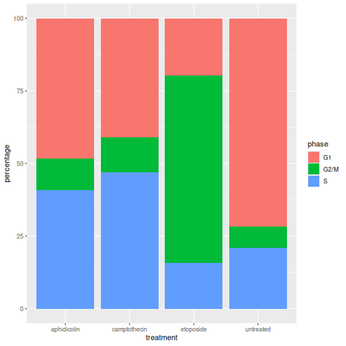

Cell Cycle Analysis from Microscopy Images
Last updated on 2026-08-17 | Edit this page
Overview
Questions
- How can DNA content be measured from microscopy images?
- How can image-analysis measurements reveal cell-cycle state?
- How do different treatments affect cell-cycle progression?
- How can reproducible workflows be applied to many images?
Objectives
- Apply an image-analysis workflow to multiple microscopy images.
- Measure integrated nuclear DAPI intensity.
- Organise image-analysis output as tidy data.
- Generate DNA-content histograms.
- Assign nuclei to cell-cycle phases.
- Compare cell-cycle distributions between treatments.
- Understand how image analysis can generate biological insight.
Introduction
Throughout this course we have developed a quantitative image-analysis workflow.
We learned how to:
Read Images
↓
Segment Objects
↓
Measure Features
↓
Create Tidy DataImage analysis becomes particularly powerful when measurements can be linked to a biological question.
In this lesson we will analyse fluorescence microscopy images of DAPI-stained nuclei and use the measured nuclear DNA content to investigate cell-cycle distribution.
This approach is based on a published workflow in which integrated nuclear DAPI intensity was used as a proxy for DNA content and cell-cycle state. Cells were treated with compounds known to perturb cell-cycle progression, and the resulting DNA-content distributions were compared between treatments.
Biological Question
Different drugs can cause cells to accumulate in different stages of the cell cycle.
Can we detect those changes using only microscopy images and image analysis?
The Treatments
The drugs used in this experiment are expected to perturb cell-cycle progression in different ways.
Aphidicolin inhibits DNA polymerase activity and prevents efficient DNA replication, causing cells to accumulate at the G1/S boundary or within early S phase.
Camptothecin induces DNA damage by inhibiting topoisomerase I, leading to replication stress and slowing the progression of cells through S phase.
Etoposide inhibits topoisomerase II and generates DNA double-strand breaks, activating DNA-damage checkpoints and frequently causing cells to accumulate in G2/M.
untreated (control) cells should be distributed across all stages of the cell cycle.
Consequently, we would predict the DNA-content histograms of the treated populations to differ from the untreated control, reflecting the specific effects of each drug on cell-cycle progression.
The Dataset
The dataset contains DAPI-stained nuclei from untreated cells and cells treated with three different compounds:
Untreated
Aphidicolin
Camptothecin
EtoposideThe image filenames contain the treatment information.
Examples:
DAPI_untreated01_R3D.ome.tif
DAPI_untreated02_R3D.ome.tif
DAPI_aphidicolin01_R3D.ome.tif
DAPI_aphidicolin02_R3D.ome.tif
DAPI_camptothecin01_R3D.ome.tif
DAPI_camptothecin02_R3D.ome.tif
DAPI_etoposide01_R3D.ome.tif
DAPI_etoposide02_R3D.ome.tifRather than analysing files manually, we will create a workflow that discovers and processes all images automatically. First we develop the workflow step-by-step, iteratively, tesing on one image. Then we create a function that incorporates each of the individual steps of the workdflow, for reproducibility. We finally apply the function to all the images in our dataset to create metrics that could support our hypothesis.
Listing the Image Files
The first step is to load the libraries we will need and then create a list of the image files that we can loop over and process them one after another.
R
library(EBImage)
library(tidyverse)
OUTPUT
── Attaching core tidyverse packages ──────────────────────── tidyverse 2.0.0 ──
✔ dplyr 1.2.1 ✔ readr 2.2.0
✔ forcats 1.0.1 ✔ stringr 1.6.0
✔ ggplot2 4.0.3 ✔ tibble 3.3.1
✔ lubridate 1.9.5 ✔ tidyr 1.3.2
✔ purrr 1.2.2
── Conflicts ────────────────────────────────────────── tidyverse_conflicts() ──
✖ dplyr::combine() masks EBImage::combine()
✖ dplyr::filter() masks stats::filter()
✖ dplyr::lag() masks stats::lag()
✖ purrr::transpose() masks EBImage::transpose()
ℹ Use the conflicted package (<http://conflicted.r-lib.org/>) to force all conflicts to become errorsR
files <- list.files(
"data/11-cell-cycle-analysis",
pattern = "\\.ome.tif$",
full.names = TRUE
)
files
OUTPUT
[1] "data/11-cell-cycle-analysis/DAPI_aphidicolin01_R3D.ome.tif"
[2] "data/11-cell-cycle-analysis/DAPI_aphidicolin02_R3D.ome.tif"
[3] "data/11-cell-cycle-analysis/DAPI_aphidicolin03_R3D.ome.tif"
[4] "data/11-cell-cycle-analysis/DAPI_aphidicolin04_R3D.ome.tif"
[5] "data/11-cell-cycle-analysis/DAPI_aphidicolin05_R3D.ome.tif"
[6] "data/11-cell-cycle-analysis/DAPI_aphidicolin06_R3D.ome.tif"
[7] "data/11-cell-cycle-analysis/DAPI_aphidicolin07_R3D.ome.tif"
[8] "data/11-cell-cycle-analysis/DAPI_aphidicolin08_R3D.ome.tif"
[9] "data/11-cell-cycle-analysis/DAPI_aphidicolin09_R3D.ome.tif"
[10] "data/11-cell-cycle-analysis/DAPI_aphidicolin10_R3D.ome.tif"
[11] "data/11-cell-cycle-analysis/DAPI_aphidicolin11_R3D.ome.tif"
[12] "data/11-cell-cycle-analysis/DAPI_camptothecin01_R3D.ome.tif"
[13] "data/11-cell-cycle-analysis/DAPI_camptothecin02_R3D.ome.tif"
[14] "data/11-cell-cycle-analysis/DAPI_camptothecin03_R3D.ome.tif"
[15] "data/11-cell-cycle-analysis/DAPI_camptothecin04_R3D.ome.tif"
[16] "data/11-cell-cycle-analysis/DAPI_camptothecin05_R3D.ome.tif"
[17] "data/11-cell-cycle-analysis/DAPI_camptothecin06_R3D.ome.tif"
[18] "data/11-cell-cycle-analysis/DAPI_camptothecin07_R3D.ome.tif"
[19] "data/11-cell-cycle-analysis/DAPI_camptothecin08_R3D.ome.tif"
[20] "data/11-cell-cycle-analysis/DAPI_camptothecin09_R3D.ome.tif"
[21] "data/11-cell-cycle-analysis/DAPI_camptothecin10_R3D.ome.tif"
[22] "data/11-cell-cycle-analysis/DAPI_camptothecin11_R3D.ome.tif"
[23] "data/11-cell-cycle-analysis/DAPI_camptothecin12_R3D.ome.tif"
[24] "data/11-cell-cycle-analysis/DAPI_camptothecin13_R3D.ome.tif"
[25] "data/11-cell-cycle-analysis/DAPI_camptothecin14_R3D.ome.tif"
[26] "data/11-cell-cycle-analysis/DAPI_etoposide01_R3D.ome.tif"
[27] "data/11-cell-cycle-analysis/DAPI_etoposide02_R3D.ome.tif"
[28] "data/11-cell-cycle-analysis/DAPI_etoposide03_R3D.ome.tif"
[29] "data/11-cell-cycle-analysis/DAPI_etoposide04_R3D.ome.tif"
[30] "data/11-cell-cycle-analysis/DAPI_etoposide05_R3D.ome.tif"
[31] "data/11-cell-cycle-analysis/DAPI_etoposide06_R3D.ome.tif"
[32] "data/11-cell-cycle-analysis/DAPI_etoposide07_R3D.ome.tif"
[33] "data/11-cell-cycle-analysis/DAPI_etoposide08_R3D.ome.tif"
[34] "data/11-cell-cycle-analysis/DAPI_etoposide09_R3D.ome.tif"
[35] "data/11-cell-cycle-analysis/DAPI_etoposide10_R3D.ome.tif"
[36] "data/11-cell-cycle-analysis/DAPI_etoposide11_R3D.ome.tif"
[37] "data/11-cell-cycle-analysis/DAPI_etoposide12_R3D.ome.tif"
[38] "data/11-cell-cycle-analysis/DAPI_untreated01_R3D.ome.tif"
[39] "data/11-cell-cycle-analysis/DAPI_untreated02_R3D.ome.tif"
[40] "data/11-cell-cycle-analysis/DAPI_untreated03_R3D.ome.tif"
[41] "data/11-cell-cycle-analysis/DAPI_untreated04_R3D.ome.tif"
[42] "data/11-cell-cycle-analysis/DAPI_untreated05_R3D.ome.tif"
[43] "data/11-cell-cycle-analysis/DAPI_untreated06_R3D.ome.tif"
[44] "data/11-cell-cycle-analysis/DAPI_untreated07_R3D.ome.tif"
[45] "data/11-cell-cycle-analysis/DAPI_untreated08_R3D.ome.tif"
[46] "data/11-cell-cycle-analysis/DAPI_untreated09_R3D.ome.tif"
[47] "data/11-cell-cycle-analysis/DAPI_untreated10_R3D.ome.tif" This approach is flexible and reproducible.
If additional images are added later, the analysis will automatically include them.
Challenge
Why is it preferable to generate a file list automatically rather than typing individual filenames into a script?
Automatically generating a file list:
- reduces typing errors
- accommodates changing datasets
- improves reproducibility
- requires less maintenance
DNA Content and the Cell Cycle
The amount of DNA present in a cell changes as the cell progresses through the cell cycle.

G1 Phase (2C)
↓
S Phase (> 2C < 4C)
↓
G2/M Phase (4C -> 2C)If DAPI staining is proportional to DNA content, then the integrated DAPI intensity of a nucleus can be used as an estimate of DNA abundance and that will tell us which phase of the cell cycle that nucleus is in.
Reading and Segmenting an Image
Read a single file into an EBImage Image object.
R
img <- readImage(files[1])
Display the image. These images are from a widefield microscope with
a 10x/0.4NA lens. The camera used was a 12-bit camera, producing data
with 4096 gray levels. Computers allocate memory in bytes (1-byte =
8-bits). Therefore, a 12-bit image has pixel data that are too large to
be stored in a single byte but the largest intensity value (4095) is
only 6% of the total range that could be stored in a 2-byte pixel
(65,536 intensity values). Consequently, we store them in a 16-bit file
format and when EBImage reads them into memory and converts the integers
into the range between 0 and 1, the largest possible value is 0.0624856.
This leads to images that are very dark when displayed on the screen,
unless we change the display. We could set the inputRange
in the normalize function so that the min is 0 and the max = 4095, but I
used the min and max from the image. Remember, these are not the values
that will be used for calculations.
R
display(normalize(img, inputRange = c(min(img), max(img))))

Segment the nuclei.
R
mask <- img > otsu(img)
mask <- opening(
mask,
makeBrush(
size = 5,
shape = "disc"
)
)
mask <- fillHull(mask)
labels <- watershed(
distmap(mask)
)
Why Use Otsu’s Thresholding Method?
So far in this course we have often selected threshold values manually. While this can be useful for learning and exploration, manually chosen thresholds can introduce subjectivity and make analyses difficult to reproduce.
To improve reproducibility, we will use Otsu’s thresholding method, an automatic threshold-selection algorithm. Rather than requiring the user to choose a threshold value, Otsu’s method examines the image histogram and identifies the threshold that best separates pixels into two groups: foreground and background.
Conceptually:
Pixel Intensities
↓
Histogram
↓
Find Threshold That Best Separates
Background and Foreground Pixels
↓
Binary MaskThe method works by identifying the threshold that maximises the difference between the two pixel populations while minimising the variation within each group. When an image contains a distinct foreground population of bright pixels against a darker background, Otsu’s method often produces a robust and objective threshold.
In this lesson, the exact threshold chosen for each image will be determined automatically from the image data rather than by the user. This means that the same workflow can be applied consistently across many images and by different researchers, helping to ensure that the analysis is reproducible.
Like all segmentation methods, Otsu’s thresholding is not perfect and may not perform well if foreground and background intensities overlap substantially. Nevertheless, it provides a widely used, objective starting point for image segmentation and is often preferred over manually selected thresholds when building reproducible image-analysis workflows.
Display the segmented nuclei.
R
display(
colorLabels(labels)
)
Measuring Integrated DAPI Intensity
The key measurement we need to extract from each nuclear object is
the integrated nuclear DAPI intensity. We cannot compute the integrated
nuclear intensity directly using functions provided by
EBImage. Instead we must calculate the mean object
intensity, using EBImages computeFeatures.basic() function
and the object size using the computeFeatures.shape()
function. We can then multiply the s.area &
b.mean columns to get the integrated intensity of each
object.
Calculate the shape and basic intensity measurements. Combine these into a features table.
R
basic_features <- as.data.frame(
computeFeatures.basic(
labels,
img
)
)
shape_features <- as.data.frame(
computeFeatures.shape(
labels
)
)
features <- cbind(basic_features, shape_features)
# Add a new column derived by multiplying the mean intensity by the area.
features <- features |>
mutate( integrated_intensity = b.mean * s.area)
#features$integrated_intensity <- features$b.mean * features$s.area
Inspect the measurements.
R
head(features)
OUTPUT
b.mean b.sd b.mad b.q001 b.q005 b.q05
1 0.008761083 0.001878036 0.001560989 0.006191806 0.006561379 0.008331426
2 0.008728840 0.001896357 0.001515743 0.006090028 0.006478218 0.008361944
3 0.008628442 0.001570094 0.001368693 0.005966278 0.006446937 0.008484016
4 0.010136777 0.002141157 0.001900334 0.006057832 0.006881819 0.010017548
5 0.008556367 0.001919451 0.001447874 0.005979095 0.006271458 0.008163577
6 0.008230235 0.001616926 0.001493120 0.005889982 0.006161593 0.007965209
b.q095 b.q099 s.area s.perimeter s.radius.mean s.radius.sd
1 0.01248493 0.01492638 1079 113 18.22184 2.8201635
2 0.01237507 0.01487419 1212 110 19.18632 0.5029763
3 0.01132982 0.01384756 1226 109 19.31771 0.6430224
4 0.01407187 0.01606607 1170 106 18.86216 0.4767409
5 0.01233539 0.01551476 1385 120 20.55114 1.1869138
6 0.01141985 0.01309224 1197 110 19.06598 0.7390376
s.radius.min s.radius.max integrated_intensity
1 11.95577 22.84621 9.453208
2 18.07020 20.33727 10.579355
3 18.02953 20.47307 10.578470
4 17.70702 19.80735 11.860029
5 17.49668 22.62927 11.850568
6 17.73047 21.13994 9.851591Integrated intensity is the sum of all pixel intensities inside a nucleus.
Conceptually:
DNA Content
↓
Integrated DAPI IntensityUnlike mean intensity, integrated intensity depends on both:
- nuclear size
- nuclear fluorescence intensity
Visualising DNA Content
Create a histogram of integrated intensity values.
R
library(ggplot2)
ggplot(
features,
aes(x = integrated_intensity)
) +
geom_histogram(
bins = 50
) +
labs(
x = "Integrated DAPI Intensity",
y = "Number of Nuclei",
title = "DNA Content Distribution"
)

Each bar represents nuclei with similar DNA content.
Challenge
What does each observation in this histogram represent?
Each observation corresponds to one nucleus and its measured integrated DAPI intensity.
Creating a Reproducible Workflow
The same analysis must be applied to every image.
Rather than copying and pasting code repeatedly, we’ll create a function.
R
measure_dna_content <- function(image_file) {
img <- readImage(image_file)
mask <- img > otsu(img)
mask <- opening(
mask,
makeBrush(
size = 5,
shape = "disc"
)
)
mask <- fillHull(mask)
labels <- watershed(
distmap(mask)
)
basic_features <- as.data.frame(
computeFeatures.basic(
labels,
img
)
)
shape_features <- as.data.frame(
computeFeatures.shape(
labels
)
)
features <- cbind(basic_features, shape_features)
features <- features |>
mutate( integrated_intensity = b.mean * s.area)
features
}
Apply the function to one image to ensure it does what we think it does.
R
measure_dna_content(
files[1]
)
OUTPUT
b.mean b.sd b.mad b.q001 b.q005 b.q05
1 0.008761083 0.0018780358 0.0015609888 0.006191806 0.006561379 0.008331426
2 0.008728840 0.0018963574 0.0015157427 0.006090028 0.006478218 0.008361944
3 0.008628442 0.0015700944 0.0013686931 0.005966278 0.006446937 0.008484016
4 0.010136777 0.0021411567 0.0019003342 0.006057832 0.006881819 0.010017548
5 0.008556367 0.0019194506 0.0014478737 0.005979095 0.006271458 0.008163577
6 0.008230235 0.0016169256 0.0014931197 0.005889982 0.006161593 0.007965209
7 0.009716019 0.0022362955 0.0021944335 0.006225681 0.006753643 0.009475853
8 0.009406115 0.0019640565 0.0016288579 0.006032197 0.006622416 0.009201190
9 0.008388397 0.0015784761 0.0016514809 0.005981537 0.006256199 0.008194095
10 0.007864279 0.0012741548 0.0009727901 0.005955596 0.006218051 0.007675288
11 0.009399584 0.0020325435 0.0016967269 0.006047913 0.006710155 0.009033341
12 0.008466273 0.0015792395 0.0014026276 0.005999847 0.006500343 0.008209354
13 0.008195964 0.0013290101 0.0012668894 0.005937133 0.006225681 0.008133059
14 0.010405258 0.0028001788 0.0024659098 0.006130922 0.006775006 0.009796292
15 0.008290400 0.0014562589 0.0015157427 0.005920500 0.006179904 0.008262760
16 0.008067466 0.0016405512 0.0015157427 0.005669337 0.006012055 0.007721065
17 0.009315066 0.0020585313 0.0018211536 0.006042573 0.006500343 0.009025711
18 0.009140274 0.0018254005 0.0020134493 0.005983825 0.006424048 0.009018082
19 0.008255375 0.0012468055 0.0013686931 0.005996796 0.006289006 0.008232242
20 0.008394911 0.0015703939 0.0014704967 0.006117037 0.006436255 0.008087282
21 0.008982725 0.0018271635 0.0019682033 0.006001068 0.006503395 0.008758679
22 0.008926369 0.0018127437 0.0018777111 0.006060578 0.006484321 0.008651865
23 0.007645704 0.0010978874 0.0011085283 0.005920500 0.006134127 0.007522698
24 0.008255131 0.0014961116 0.0014704967 0.005920500 0.006210422 0.008026246
25 0.010767393 0.0024279914 0.0027147631 0.006273899 0.007046616 0.010650797
26 0.009090399 0.0016746519 0.0016967269 0.006062562 0.006615549 0.009033341
27 0.008543084 0.0016109242 0.0014252506 0.005951019 0.006330968 0.008346685
28 0.008102227 0.0014052112 0.0014704967 0.005951019 0.006164645 0.007934691
29 0.007806438 0.0010255456 0.0009388556 0.005945220 0.006173037 0.007743954
30 0.008739850 0.0019492309 0.0021831220 0.005964599 0.006210422 0.008499275
31 0.007718384 0.0011706149 0.0011537743 0.005889982 0.006073091 0.007583734
32 0.007929438 0.0010888214 0.0011763973 0.005966278 0.006317235 0.007873655
33 0.007456500 0.0009452164 0.0007691829 0.005920500 0.006160067 0.007309071
34 0.007632244 0.0011212562 0.0009727901 0.005889982 0.006088350 0.007492180
35 0.007430032 0.0012120968 0.0008596750 0.005935760 0.006073091 0.007125963
36 0.008425443 0.0014157490 0.0014704967 0.006057832 0.006332494 0.008331426
37 0.007501895 0.0010891474 0.0010859052 0.005908598 0.006103609 0.007324331
38 0.007863651 0.0013861241 0.0012668894 0.005932097 0.006118868 0.007583734
39 0.007289033 0.0011947512 0.0008370520 0.005628443 0.006027314 0.007034409
40 0.007046697 0.0007224646 0.0006560678 0.005920500 0.006042573 0.006965743
41 0.008096244 0.0015936113 0.0014931197 0.005889982 0.006088350 0.007812619
42 0.007467988 0.0012715922 0.0009501671 0.005920500 0.006073091 0.007141222
43 0.007713303 0.0014132752 0.0011763973 0.005920500 0.006088350 0.007476921
44 0.008084873 0.0014257425 0.0012895125 0.005935760 0.006210422 0.007919432
45 0.007886083 0.0016260247 0.0011763973 0.005947204 0.006164645 0.007446403
46 0.007525698 0.0010622006 0.0009954131 0.005940948 0.006118868 0.007339590
47 0.008667349 0.0016380636 0.0014478737 0.005958343 0.006338598 0.008529793
48 0.008120149 0.0015748837 0.0015157427 0.005899596 0.006121157 0.007812619
49 0.007593166 0.0012532849 0.0009954131 0.005920500 0.006176852 0.007278553
50 0.008322145 0.0012942518 0.0011311513 0.006058747 0.006469825 0.008209354
51 0.007526324 0.0010785302 0.0009954131 0.005920500 0.006134127 0.007370108
52 0.007636657 0.0012079105 0.0012216434 0.005905241 0.006096742 0.007446403
53 0.007465241 0.0010939971 0.0009954131 0.005907988 0.006095216 0.007263294
54 0.008871237 0.0017432116 0.0016967269 0.006002899 0.006546120 0.008682383
55 0.007542782 0.0010494076 0.0009275441 0.005925994 0.006149386 0.007415885
56 0.008376229 0.0015755599 0.0014478737 0.006010834 0.006356909 0.008133059
57 0.007822844 0.0013231628 0.0011990204 0.005917144 0.006208896 0.007583734
58 0.008335360 0.0015074189 0.0014365621 0.005954833 0.006439307 0.008072023
59 0.008222951 0.0016180073 0.0015496773 0.005945068 0.006210422 0.007896544
60 0.008733670 0.0019112515 0.0021039414 0.005951019 0.006155489 0.008545052
61 0.007719985 0.0010800096 0.0009501671 0.005977874 0.006210422 0.007629511
62 0.008142674 0.0016806243 0.0013347585 0.005929046 0.006207370 0.007705806
63 0.007695893 0.0010257267 0.0009614786 0.006034485 0.006210422 0.007591363
64 0.008003058 0.0013017423 0.0011990204 0.005996796 0.006235599 0.007782101
65 0.008565707 0.0013412160 0.0012442664 0.005966278 0.006456855 0.008407721
66 0.008042050 0.0013800227 0.0012442664 0.005963684 0.006179904 0.007866026
67 0.007697664 0.0013708021 0.0011537743 0.005889982 0.006103609 0.007370108
68 0.008618797 0.0016208980 0.0014026276 0.006022583 0.006568246 0.008377203
69 0.007746152 0.0013156969 0.0013121355 0.005905241 0.006073091 0.007537957
70 0.007757707 0.0011195327 0.0011311513 0.005941558 0.006132601 0.007705806
71 0.008768316 0.0016436201 0.0016741039 0.006042878 0.006456092 0.008560311
72 0.007735261 0.0012672668 0.0011763973 0.005951019 0.006162356 0.007537957
73 0.007824218 0.0010845543 0.0010859052 0.005920500 0.006173037 0.007873655
74 0.008097637 0.0014575794 0.0013008240 0.005996796 0.006301976 0.007888914
75 0.008197284 0.0016422183 0.0015383658 0.005695888 0.006186007 0.007919432
76 0.008192560 0.0017833027 0.0016062348 0.005907530 0.006130312 0.007858396
77 0.008171012 0.0015048844 0.0014139391 0.005996796 0.006169986 0.007972839
78 0.008685383 0.0014250898 0.0011990204 0.006102083 0.006729229 0.008529793
79 0.009409893 0.0022206345 0.0020586954 0.006122225 0.006561379 0.009109636
80 0.008313914 0.0014491988 0.0013121355 0.005956207 0.006314946 0.008117800
81 0.007772598 0.0013618812 0.0012329549 0.005902647 0.006073091 0.007507439
82 0.011335065 0.0023965666 0.0024206638 0.006380407 0.007382315 0.011261158
83 0.007884169 0.0012002529 0.0012668894 0.005981537 0.006234073 0.007782101
84 0.007536693 0.0013877385 0.0009727901 0.005484092 0.006042573 0.007202258
85 0.007785077 0.0012771678 0.0011311513 0.005945373 0.006118868 0.007644770
86 0.007329879 0.0010230760 0.0010180362 0.005920500 0.006073854 0.007110704
87 0.007229195 0.0008890710 0.0007465599 0.005917906 0.006088350 0.007049668
88 0.007866975 0.0013359376 0.0010632822 0.005955291 0.006207370 0.007598993
89 0.007564464 0.0010912687 0.0008596750 0.005971313 0.006164645 0.007385367
90 0.007924202 0.0011952362 0.0011537743 0.006076448 0.006242466 0.007827878
91 0.008591571 0.0014416925 0.0014931197 0.005968414 0.006253910 0.008560311
92 0.007813310 0.0014437207 0.0013347585 0.005906157 0.006103609 0.007553216
93 0.008374099 0.0017452720 0.0015383658 0.005971618 0.006195163 0.008072023
94 0.007301833 0.0010801519 0.0009049210 0.005367208 0.005966278 0.007095445
95 0.008736327 0.0017324857 0.0015609888 0.005932860 0.006408789 0.008537423
96 0.007787520 0.0014288369 0.0011877089 0.005951019 0.006122683 0.007469291
97 0.008374348 0.0017908265 0.0016514809 0.005951019 0.006215763 0.008102541
98 0.008514326 0.0015403382 0.0014931197 0.006042573 0.006378271 0.008316167
99 0.009108295 0.0020813014 0.0015496773 0.005996796 0.006530861 0.008667124
100 0.008359493 0.0015288763 0.0014026276 0.005954376 0.006334020 0.008178836
101 0.008404728 0.0015464839 0.0016062348 0.005946746 0.006219577 0.008270390
102 0.007989741 0.0013323712 0.0010859052 0.005936828 0.006271458 0.007751583
103 0.008215242 0.0015109072 0.0013913161 0.005966278 0.006229496 0.007934691
104 0.007491575 0.0009239501 0.0009275441 0.005967193 0.006164645 0.007415885
105 0.007927030 0.0013420885 0.0013347585 0.005966278 0.006225681 0.007721065
106 0.007160182 0.0008061872 0.0007013138 0.005920500 0.006012055 0.007080186
107 0.007880031 0.0011482530 0.0011424628 0.005914244 0.006163882 0.007881285
108 0.008528424 0.0013102907 0.0011990204 0.005929351 0.006527810 0.008392462
109 0.010290816 0.0022226543 0.0021491875 0.005977264 0.006647593 0.010238804
110 0.007377881 0.0011331693 0.0009727901 0.005889982 0.006055543 0.007125963
111 0.009975080 0.0022695927 0.0021718105 0.005967651 0.006672770 0.009628443
112 0.007807074 0.0014439297 0.0013573816 0.005845579 0.006003662 0.007522698
113 0.007335440 0.0011041555 0.0008822980 0.005874723 0.006042573 0.007095445
114 0.007612439 0.0012802234 0.0012329549 0.005935760 0.006073091 0.007362478
115 0.006796177 0.0006993735 0.0006108217 0.005694820 0.005920500 0.006668193
116 0.007452968 0.0008743592 0.0009727901 0.005951019 0.006073091 0.007400626
117 0.007249486 0.0007346213 0.0006786908 0.005905241 0.006118868 0.007232776
118 0.007476522 0.0011496862 0.0011763973 0.005903410 0.006063935 0.007293812
119 0.007356299 0.0009501235 0.0009049210 0.005905241 0.006057832 0.007202258
120 0.007450319 0.0011717296 0.0009049210 0.005894408 0.006073091 0.007186999
121 0.007518603 0.0011550756 0.0009049210 0.005905241 0.006059358 0.007263294
122 0.007447645 0.0010476512 0.0009501671 0.005920500 0.006103609 0.007263294
123 0.007366936 0.0010299448 0.0009049210 0.005876402 0.006012055 0.007171740
124 0.007905595 0.0013695867 0.0011990204 0.005909667 0.006156252 0.007705806
125 0.007628450 0.0013572288 0.0010519707 0.005935760 0.006118868 0.007339590
126 0.007831232 0.0013509072 0.0013121355 0.005925994 0.006149386 0.007660029
127 0.008798674 0.0017080064 0.0016967269 0.005981537 0.006347753 0.008636606
128 0.007488387 0.0010669870 0.0010972168 0.005905241 0.006060121 0.007377737
129 0.007328671 0.0011203467 0.0009501671 0.005935760 0.006042573 0.007095445
130 0.008166841 0.0012262754 0.0013573816 0.006019074 0.006240940 0.008087282
131 0.009266047 0.0021004136 0.0020134493 0.006031891 0.006469825 0.008987564
132 0.007485753 0.0011857808 0.0009614786 0.005889982 0.006027314 0.007324331
133 0.007755519 0.0011749541 0.0012782010 0.005874723 0.006096742 0.007637140
134 0.007671184 0.0011393503 0.0012442664 0.005912261 0.006092927 0.007507439
135 0.006922774 0.0006989813 0.0006786908 0.005905241 0.006012055 0.006820783
136 0.008251437 0.0013767873 0.0013347585 0.005976043 0.006274510 0.008117800
137 0.007267624 0.0008455578 0.0008370520 0.005889982 0.006088350 0.007171740
138 0.009892116 0.0021814394 0.0021491875 0.006022736 0.006359197 0.010177768
139 0.007224869 0.0010286353 0.0009162325 0.005859464 0.005966278 0.007042039
140 0.006830544 0.0005918268 0.0005203296 0.005905241 0.006042573 0.006775006
141 0.007173212 0.0010962749 0.0008596750 0.005838865 0.005976196 0.006897078
142 0.007908821 0.0014105570 0.0013800046 0.005927214 0.006091402 0.007736324
143 0.006910862 0.0005683426 0.0005429526 0.005930877 0.006109712 0.006851301
144 0.007391021 0.0012507526 0.0010406592 0.005872740 0.006012055 0.007095445
145 0.011464784 0.0029386553 0.0032350927 0.005966430 0.006853590 0.011673152
146 0.007276418 0.0009541562 0.0009954131 0.005889982 0.006027314 0.007103075
147 0.007211403 0.0006539138 0.0006560678 0.005920500 0.006103609 0.007217517
148 0.009685330 0.0022686671 0.0023867292 0.005996796 0.006476692 0.009384298
149 0.006977874 0.0009118772 0.0007352483 0.005655756 0.005931945 0.006782635
150 0.007222572 0.0008939038 0.0007691829 0.005935760 0.006073091 0.007095445
151 0.007262787 0.0008760144 0.0008483635 0.005914549 0.006088350 0.007209888
152 0.007186589 0.0011440178 0.0008144289 0.005747768 0.006027314 0.006912337
153 0.007453232 0.0012976889 0.0010406592 0.005859464 0.005996796 0.007125963
154 0.007328788 0.0007683015 0.0007691829 0.005971313 0.006149386 0.007339590
155 0.007612599 0.0011850346 0.0012329549 0.005956970 0.006088350 0.007316701
156 0.006622784 0.0003838144 0.0003845914 0.005930419 0.006038758 0.006607156
157 0.007043674 0.0011080175 0.0007465599 0.005809873 0.005935760 0.006729229
158 0.006379284 0.0002742963 0.0002940993 0.005859464 0.005951019 0.006378271
159 0.007037415 0.0011087052 0.0006221332 0.005934997 0.006050202 0.006668193
160 0.006260671 0.0002709491 0.0002375418 0.005868162 0.005918212 0.006210422
161 0.006793090 0.0010752482 0.0005768872 0.005837949 0.005884642 0.006401160
162 0.006347075 0.0003215926 0.0003393454 0.005866178 0.005877775 0.006332494
163 0.006970912 0.0009435136 0.0007918059 0.005917449 0.006012055 0.006637675
164 0.006959640 0.0008070670 0.0008144289 0.005977569 0.006042573 0.006744488
b.q095 b.q099 s.area s.perimeter s.radius.mean s.radius.sd
1 0.012484932 0.014926375 1079 113 18.221843 2.8201635
2 0.012375067 0.014874189 1212 110 19.186324 0.5029763
3 0.011329824 0.013847562 1226 109 19.317710 0.6430224
4 0.014071870 0.016066072 1170 106 18.862165 0.4767409
5 0.012335393 0.015514763 1385 120 20.551137 1.1869138
6 0.011419852 0.013092241 1197 110 19.065976 0.7390376
7 0.014071870 0.016344244 1193 109 19.062543 1.0294789
8 0.012835889 0.016531014 1117 105 18.420578 0.6181400
9 0.011168078 0.012934463 563 92 13.690612 3.9237514
10 0.010597391 0.012457465 1131 108 18.547877 1.1206874
11 0.013401236 0.015901427 1136 106 18.605143 1.0452675
12 0.011398489 0.013687343 1241 113 19.527095 1.9814176
13 0.010635538 0.012187839 1110 107 18.335677 0.8643659
14 0.015718318 0.019095445 1094 106 18.201998 1.0253103
15 0.010803388 0.012688334 1108 104 18.386817 1.0478268
16 0.011133745 0.012799878 1028 101 17.637713 0.6996793
17 0.013275349 0.015501335 1104 106 18.354276 1.2478355
18 0.012169070 0.014030671 1016 101 17.549452 0.9053085
19 0.010360876 0.011302358 1064 103 17.983138 1.2286392
20 0.011444266 0.013585412 997 99 17.384096 0.7665640
21 0.012457465 0.013783780 965 97 17.071193 0.4715679
22 0.012299535 0.013760891 1060 105 17.855358 1.1335168
23 0.009664302 0.010468757 1094 116 18.100190 1.5248899
24 0.011017014 0.012605478 971 101 17.120411 0.8051238
25 0.014972152 0.016505989 1017 101 17.631351 1.1890682
26 0.012076753 0.014024109 932 94 16.803263 0.5498499
27 0.011323720 0.013752041 1039 101 17.752083 1.2799843
28 0.010559243 0.012277409 1021 105 17.490947 1.0198127
29 0.009658961 0.010763409 432 78 11.787650 3.1997434
30 0.012398718 0.013788968 1090 107 18.194018 1.7363057
31 0.009857328 0.011402457 1030 102 17.703536 1.7972297
32 0.009765774 0.010711223 973 100 17.222975 1.5945601
33 0.009201190 0.010776837 875 95 16.221607 1.0354810
34 0.009613184 0.011238880 843 92 15.923960 0.6655575
35 0.009893950 0.011996033 947 102 16.856784 1.1763580
36 0.010908675 0.012310674 923 96 16.712410 1.4739994
37 0.009550622 0.010679789 823 93 15.741089 0.8061192
38 0.010580606 0.012104067 877 97 16.228148 0.9362569
39 0.009751278 0.011915618 894 97 16.409583 1.0007517
40 0.008453498 0.009217517 832 95 15.793525 0.8901563
41 0.011297780 0.012693675 853 95 16.031693 1.1993481
42 0.010119783 0.012063783 849 97 15.908982 1.2205297
43 0.010431830 0.013461967 808 94 15.620398 1.0963696
44 0.010661479 0.012620584 792 91 15.390069 0.8697380
45 0.011356527 0.013736934 776 89 15.256930 0.6543786
46 0.009668879 0.010655833 768 91 15.172001 0.8555701
47 0.011865415 0.013443198 749 86 14.997446 0.8443379
48 0.011291676 0.012584726 864 97 16.097053 0.9815977
49 0.010315099 0.011454643 817 93 15.636259 1.1151513
50 0.010707256 0.012576791 707 83 14.548632 0.4881583
51 0.009642939 0.010980087 808 90 15.666319 1.2723643
52 0.009848936 0.011115435 852 95 16.031276 1.3551035
53 0.009539940 0.010971389 810 92 15.593593 0.7248954
54 0.011917296 0.014267185 741 85 14.934644 0.7653391
55 0.009521630 0.010978256 819 94 15.608065 1.0765308
56 0.011364920 0.013148394 893 95 16.557237 1.8073925
57 0.010397498 0.012212100 779 92 15.289774 1.2391694
58 0.011165789 0.012695506 706 82 14.550614 0.6025596
59 0.011413748 0.013043107 762 89 15.104083 0.9288437
60 0.012222477 0.013669642 709 83 14.584703 0.8258336
61 0.009677272 0.011133593 777 90 15.289020 1.3109973
62 0.011239796 0.013680018 757 88 15.042109 0.7110664
63 0.009663539 0.010574502 548 84 12.927401 2.3226674
64 0.010458534 0.012034791 714 84 14.616989 0.6571055
65 0.010952926 0.012265965 724 85 14.726032 0.8528635
66 0.010814069 0.012514992 784 91 15.337081 1.2393326
67 0.010157931 0.012639811 834 100 15.723777 1.0566111
68 0.011830320 0.013836728 670 80 14.171406 0.5135587
69 0.010238804 0.011450370 781 94 15.324135 1.0779387
70 0.009758907 0.010750744 770 93 15.166215 1.4757553
71 0.011869993 0.013198749 703 83 14.530220 0.6279010
72 0.010103761 0.011777371 818 91 15.689977 1.0037737
73 0.009604791 0.010831006 692 83 14.391253 0.7375887
74 0.010803388 0.012887007 750 87 14.992010 0.9548348
75 0.011361868 0.013463951 689 83 14.365610 0.9070557
76 0.011757076 0.014334325 716 88 14.599932 0.9358527
77 0.010757610 0.013145037 708 84 14.560023 0.7151297
78 0.011409934 0.013239490 646 79 13.903239 0.4945447
79 0.013656825 0.016108034 623 78 13.628796 0.4743592
80 0.011019303 0.012972457 718 85 14.670237 0.9860920
81 0.010432593 0.012052338 684 85 14.288348 0.6828005
82 0.015324636 0.017103227 639 78 13.825424 0.5215490
83 0.010093080 0.011494469 672 94 14.016670 1.7822674
84 0.010492103 0.012600290 809 99 15.546944 1.5068849
85 0.010129702 0.012122988 764 90 15.166261 1.2116525
86 0.009383536 0.010039673 682 87 14.245182 1.5967085
87 0.008863203 0.010335546 784 95 15.412082 1.8572702
88 0.010589761 0.012037232 715 87 14.672664 1.2694917
89 0.009671168 0.011634394 312 67 10.046401 2.8162115
90 0.010113680 0.011361257 723 90 14.654778 1.0440111
91 0.011097887 0.012148470 658 81 14.049862 0.9361304
92 0.010759136 0.012247501 707 91 14.508866 1.1612994
93 0.011672389 0.014129854 708 84 14.620080 1.3699845
94 0.009292744 0.010911116 799 101 15.392235 1.2893333
95 0.012053101 0.014709545 682 82 14.341424 1.2408267
96 0.010711833 0.012656596 766 100 15.008941 1.4961297
97 0.012023346 0.014373083 668 83 14.167469 1.0209933
98 0.011684596 0.012617685 806 94 15.663557 2.3985735
99 0.013517967 0.015795224 694 83 14.419733 1.2507576
100 0.011244373 0.013027848 523 89 12.512683 2.6086998
101 0.011258106 0.012494697 673 89 14.103123 1.7241343
102 0.010691234 0.012386053 808 101 15.341486 1.7087876
103 0.011318379 0.012529183 666 83 14.106213 1.2250524
104 0.009111162 0.009941558 707 94 14.506836 1.5050803
105 0.010377661 0.011886778 707 86 14.647087 1.4980228
106 0.008549630 0.009872587 635 85 13.821276 1.4737915
107 0.009918364 0.011151598 560 72 12.919815 0.3649307
108 0.010894942 0.012207980 680 83 14.277040 1.5204791
109 0.013860533 0.016072786 394 68 10.851704 2.0950688
110 0.009554437 0.010990616 638 85 13.800564 1.1417507
111 0.014203861 0.015822232 604 77 13.422727 0.8073396
112 0.010608072 0.012290532 710 91 14.510900 1.4239678
113 0.009441520 0.011387045 776 99 15.117226 1.4570812
114 0.010330358 0.011594568 766 92 15.198445 1.8663864
115 0.008269627 0.008944228 622 86 13.674367 1.3728540
116 0.008941787 0.009556268 674 95 13.934458 1.8686987
117 0.008506905 0.009095903 631 83 13.689568 0.9302890
118 0.009582666 0.011104295 689 92 14.281029 1.2491910
119 0.009152361 0.010205234 705 87 14.512148 1.8256048
120 0.009872587 0.011439841 830 104 15.469457 2.1563926
121 0.009680323 0.011469902 723 90 14.835737 2.3222859
122 0.009353780 0.010847639 786 104 15.101359 2.9254640
123 0.009475853 0.010372778 712 93 14.526148 1.3780017
124 0.010811780 0.012265812 730 94 14.855770 2.4097489
125 0.010145724 0.012688029 762 109 14.528169 2.2400880
126 0.010577554 0.011961852 737 92 14.689987 1.9018055
127 0.011812772 0.013630884 578 75 13.168826 1.2247759
128 0.009552148 0.010808576 684 90 14.304071 1.6275662
129 0.009422446 0.011387808 791 101 15.399438 2.1022660
130 0.010284581 0.010767071 547 73 12.799622 0.8890579
131 0.013351644 0.015086595 631 79 13.939032 1.8778966
132 0.009729152 0.012026398 698 92 14.483149 1.8700603
133 0.009861143 0.010585031 632 97 13.351839 2.0778397
134 0.009854276 0.010496071 647 88 13.874956 1.5658535
135 0.008258946 0.008992142 636 98 13.704061 1.9152277
136 0.010681315 0.012105898 665 95 13.702097 1.7924811
137 0.008857862 0.009570459 571 78 12.972847 0.8587583
138 0.013248646 0.015030137 536 86 12.598804 1.0101573
139 0.009295033 0.010629129 658 96 13.960460 1.6216499
140 0.007943084 0.008675517 730 103 14.377829 2.6109222
141 0.009328603 0.010819867 674 107 13.958843 3.0619480
142 0.010601968 0.012086976 545 80 12.694986 1.1716679
143 0.007995727 0.008289311 269 57 8.946642 1.9307994
144 0.009826810 0.011543755 788 119 14.902925 2.4457103
145 0.016305028 0.018066529 444 66 11.435932 0.6379870
146 0.009178302 0.009949645 586 88 13.023077 1.4429812
147 0.008270390 0.008804456 579 77 13.432555 2.0634045
148 0.013672084 0.015450523 570 76 13.272300 1.9976540
149 0.009025711 0.009876402 556 81 12.871873 1.4931604
150 0.008972305 0.010096132 806 108 15.085571 2.8933016
151 0.008986038 0.009831998 662 92 13.797361 2.1260561
152 0.009524681 0.011748226 669 113 14.075094 2.6661059
153 0.010104524 0.011958801 639 99 13.728026 2.2029083
154 0.008687724 0.009053941 534 77 12.572396 1.4353880
155 0.009674220 0.011616999 240 63 9.023068 3.1668513
156 0.007297627 0.007568475 456 75 11.636656 1.7805255
157 0.009647517 0.010723278 476 96 11.799852 2.3448930
158 0.006836042 0.007056535 256 55 8.620582 1.4175829
159 0.009761959 0.010537118 66 30 4.184066 0.8706535
160 0.006786450 0.006912490 58 27 3.908751 0.8315572
161 0.009288930 0.009959564 54 29 3.598987 0.9460936
162 0.006848249 0.007082628 45 19 3.383376 0.4061449
163 0.008728161 0.009590295 31 20 2.891276 1.1126660
164 0.008144503 0.008893874 30 15 2.657957 0.2153485
s.radius.min s.radius.max integrated_intensity
1 11.955765 22.846207 9.4532082
2 18.070196 20.337274 10.5793545
3 18.029530 20.473069 10.5784695
4 17.707022 19.807349 11.8600290
5 17.496676 22.629266 11.8505684
6 17.730473 21.139937 9.8515908
7 17.349616 21.131523 11.5912108
8 17.236319 19.628581 10.5066300
9 6.402921 20.906563 4.7226673
10 16.362728 21.690968 8.8944991
11 16.740286 20.694348 10.6779278
12 15.852087 23.002620 10.5066453
13 15.487098 20.443442 9.0975204
14 15.752632 20.050741 11.3833524
15 16.448349 20.220185 9.1857633
16 15.531372 19.388568 8.2933547
17 16.260476 20.646788 10.2838331
18 16.080833 19.354410 9.2865187
19 16.006980 20.032743 8.7837186
20 15.652267 18.665139 8.3697261
21 15.643629 18.161402 8.6683299
22 13.620236 19.852705 9.4619516
23 14.240153 20.688725 8.3644007
24 14.714300 18.666583 8.0157321
25 15.701700 19.877815 10.9504387
26 15.887809 18.083645 8.4722515
27 15.107123 20.426818 8.8762646
28 13.233727 18.944483 8.2723735
29 5.799437 17.435379 3.3723812
30 14.988793 21.605217 9.5264363
31 14.677309 21.037126 7.9499351
32 14.154028 19.836242 7.7153429
33 13.769451 18.355206 6.5244373
34 14.088839 17.499558 6.4339818
35 13.179541 18.852740 7.0362402
36 13.932567 19.099841 7.7766842
37 14.241711 17.271659 6.1740597
38 13.628258 18.217402 6.8964218
39 13.144023 18.140982 6.5163958
40 13.490097 17.343088 5.8628519
41 14.057740 18.469008 6.9060960
42 12.432173 17.709342 6.3403220
43 13.449792 18.191741 6.2323491
44 13.279096 17.390609 6.4032197
45 13.352613 17.029060 6.1196002
46 13.484273 16.811865 5.7797360
47 13.393542 16.850671 6.4918441
48 13.685108 18.235111 7.0158083
49 12.406440 17.463799 6.2036164
50 13.400331 15.543649 5.8837568
51 13.158131 17.713861 6.0812696
52 13.549278 18.315475 6.5064317
53 12.892500 16.739670 6.0468452
54 13.475689 16.354350 6.5735866
55 11.750312 17.178835 6.1775387
56 12.784929 19.212706 7.4799725
57 12.359747 17.698019 6.0939956
58 13.076771 15.799876 5.8847639
59 13.124447 16.651871 6.2658885
60 13.048643 16.238126 6.1921721
61 13.405407 18.431086 5.9984283
62 11.893553 16.340198 6.1640040
63 8.246899 16.780428 4.2173495
64 12.416672 15.994268 5.7141833
65 13.214703 16.267402 6.2015717
66 12.372719 17.696979 6.3049668
67 11.576977 17.378907 6.4198520
68 13.258299 15.361722 5.7745937
69 12.841025 17.160023 6.0497444
70 12.022448 17.122943 5.9734340
71 13.098198 15.785730 6.1641260
72 12.548084 17.300941 6.3274434
73 12.927913 16.076574 5.4143587
74 12.607482 16.811507 6.0732280
75 12.771834 15.902542 5.6479286
76 11.975839 16.144596 5.8658732
77 11.841977 15.815726 5.7850767
78 12.777044 14.834520 5.6107576
79 12.681710 14.695373 5.8623636
80 12.390224 16.306260 5.9693904
81 12.735331 15.848561 5.3164569
82 12.621044 14.957495 7.2431067
83 8.924930 16.868550 5.2981613
84 12.653566 18.254973 6.0971847
85 12.440739 17.299158 5.9477989
86 9.556066 16.927398 4.9989776
87 12.035796 18.973038 5.6676890
88 11.213096 17.156419 5.6248875
89 4.716276 15.363894 2.3601129
90 11.546177 16.441910 5.7291981
91 11.883555 15.666166 5.6532540
92 10.954010 17.129475 5.5240101
93 12.180986 17.439562 5.9288624
94 12.354535 17.852833 5.8341650
95 11.986415 16.515802 5.9581750
96 9.979143 17.555720 5.9652399
97 11.874318 15.949450 5.5940642
98 12.013992 19.511476 6.8625467
99 12.386386 16.495736 6.3211566
100 8.071202 16.805511 4.3720150
101 10.013758 17.647136 5.6563821
102 8.984918 17.769036 6.4557107
103 11.378305 16.131860 5.4713512
104 10.463679 17.259572 5.2965438
105 11.774437 17.306678 5.6044099
106 11.171404 16.942124 4.5467155
107 12.023158 13.778030 4.4128176
108 11.460726 16.885120 5.7993286
109 6.705882 14.197080 4.0545815
110 11.414372 16.289105 4.7070878
111 11.331919 14.823530 6.0249485
112 11.135014 16.989640 5.5430228
113 10.941669 17.096072 5.6923018
114 10.877877 18.536742 5.8311284
115 10.715083 16.877782 4.2272221
116 9.200795 16.580645 5.0233005
117 11.302849 15.388000 4.5744259
118 11.413778 17.158861 5.1513237
119 9.615381 17.561593 5.1861906
120 8.598283 18.696146 6.1837644
121 9.659602 19.275117 5.4359503
122 7.053112 19.625245 5.8538491
123 9.916083 17.329684 5.2452583
124 10.898919 19.574714 5.7710842
125 7.866816 17.171200 5.8128786
126 8.513444 17.596950 5.7716182
127 10.885554 15.289712 5.0856336
128 10.668756 17.489048 5.1220569
129 10.872446 18.492230 5.7969787
130 10.924200 14.674871 4.4672618
131 11.091093 16.774745 5.8468757
132 10.412261 17.814929 5.2250553
133 7.868681 16.630882 4.9014878
134 9.579788 16.562542 4.9632563
135 10.000000 17.262677 4.4028840
136 7.195582 16.492026 5.4872053
137 9.887500 14.491150 4.1498131
138 10.213122 14.892825 5.3021744
139 9.961738 16.790584 4.7539635
140 5.996354 17.969093 4.9862974
141 6.294890 18.882060 4.8347448
142 10.040021 14.786887 4.3103075
143 5.145408 11.967124 1.8590219
144 9.181475 18.919475 5.8241245
145 10.041294 12.599075 5.0903639
146 9.249644 15.314476 4.2639811
147 10.244910 16.907994 4.1754025
148 9.985524 16.602954 5.5206378
149 9.349796 16.067725 3.8796979
150 6.732914 19.723052 5.8213931
151 6.178829 16.261574 4.8079652
152 8.202389 19.601009 4.8078279
153 8.738722 17.729494 4.7626154
154 8.370742 14.724896 3.9135729
155 3.638385 14.617876 1.8270237
156 7.791745 15.008596 3.0199893
157 6.518753 16.315074 3.3527886
158 6.239437 11.546886 1.6330968
159 2.828820 5.785230 0.4644694
160 2.363416 5.353486 0.3631189
161 1.305344 5.028929 0.3668269
162 2.737348 4.119073 0.2856184
163 1.162970 4.620877 0.2160983
164 2.357023 2.981424 0.2087892Reproducibility
Functions help ensure that every image is processed using exactly the same workflow and parameters.
Extracting Treatment Information
The treatment name is encoded within each filename.
For example:
DAPI_etoposide01_R3D.ome.tifcontains:
etoposideExtract the treatment name.
R
example_file <- basename(files[1])
str_extract(
example_file,
"(?<=DAPI_)[A-Za-z]+(?=[0-9])"
)
OUTPUT
[1] "aphidicolin"we will use the same approach throughout the analysis.
Measuring All Images
Create an empty data frame.
R
all_measurements <- data.frame()
Process every image.
R
for (file in files) {
measurements <- measure_dna_content(file) |>
mutate(
image = basename(file),
treatment = str_extract(
image,
"(?<=DAPI_)[A-Za-z]+(?=[0-9])"
)
)
all_measurements <- rbind(
all_measurements,
measurements
)
}
Inspect the results.
R
head(all_measurements)
OUTPUT
b.mean b.sd b.mad b.q001 b.q005 b.q05
1 0.008761083 0.001878036 0.001560989 0.006191806 0.006561379 0.008331426
2 0.008728840 0.001896357 0.001515743 0.006090028 0.006478218 0.008361944
3 0.008628442 0.001570094 0.001368693 0.005966278 0.006446937 0.008484016
4 0.010136777 0.002141157 0.001900334 0.006057832 0.006881819 0.010017548
5 0.008556367 0.001919451 0.001447874 0.005979095 0.006271458 0.008163577
6 0.008230235 0.001616926 0.001493120 0.005889982 0.006161593 0.007965209
b.q095 b.q099 s.area s.perimeter s.radius.mean s.radius.sd
1 0.01248493 0.01492638 1079 113 18.22184 2.8201635
2 0.01237507 0.01487419 1212 110 19.18632 0.5029763
3 0.01132982 0.01384756 1226 109 19.31771 0.6430224
4 0.01407187 0.01606607 1170 106 18.86216 0.4767409
5 0.01233539 0.01551476 1385 120 20.55114 1.1869138
6 0.01141985 0.01309224 1197 110 19.06598 0.7390376
s.radius.min s.radius.max integrated_intensity image
1 11.95577 22.84621 9.453208 DAPI_aphidicolin01_R3D.ome.tif
2 18.07020 20.33727 10.579355 DAPI_aphidicolin01_R3D.ome.tif
3 18.02953 20.47307 10.578470 DAPI_aphidicolin01_R3D.ome.tif
4 17.70702 19.80735 11.860029 DAPI_aphidicolin01_R3D.ome.tif
5 17.49668 22.62927 11.850568 DAPI_aphidicolin01_R3D.ome.tif
6 17.73047 21.13994 9.851591 DAPI_aphidicolin01_R3D.ome.tif
treatment
1 aphidicolin
2 aphidicolin
3 aphidicolin
4 aphidicolin
5 aphidicolin
6 aphidicolinEach row corresponds to a single nucleus.
Tidy Data
Each row represents one nucleus.
Each column represents one measured variable.
This structure makes downstream analysis straightforward.
DNA Content Histograms by Treatment
Visualise the DNA-content distributions.
R
ggplot(
all_measurements,
aes(x = integrated_intensity)
) +
geom_histogram(
bins = 50
) +
facet_wrap(
~ treatment,
scales = "free_y"
) +
labs(
x = "Integrated DAPI Intensity",
y = "Number of Nuclei"
)

Each panel represents one treatment condition.
Challenge
Why might different treatments produce different DNA-content histograms?
Some treatments alter cell-cycle progression.
As cells accumulate in particular cell-cycle stages, the distribution of DNA content changes.
Defining Cell-Cycle Gates
Cell-cycle phase can be estimated from DNA content.
Conceptually:
Lower DNA Content
↓
G1
Intermediate DNA Content
↓
S
Higher DNA Content
↓
G2/MThe exact thresholds depend on the experiment and are typically chosen by examining the DNA-content histogram. 【1-0cef45】
Example gates:
R
all_measurements <- all_measurements |>
mutate(
phase = case_when(
integrated_intensity < 6 ~ "G1",
integrated_intensity < 10 ~ "S",
TRUE ~ "G2/M"
)
)
Inspect the results.
R
table(
all_measurements$phase
)
OUTPUT
G1 G2/M S
4458 1827 2641 Biological Interpretation
The threshold values shown here are illustrative.
For real experiments, gates should be chosen based on the observed DNA-content distributions.
Calculating Cell-Cycle Percentages
Calculate the percentage of cells in each phase. This table is in the tidy format, but it’s hard to see and summarise. We can also create a visually appealing summary table.
R
phase_summary <- aggregate(
integrated_intensity ~ treatment + phase,
data = all_measurements,
FUN = length
)
names(phase_summary)[3] <- "count"
phase_summary
OUTPUT
treatment phase count
1 aphidicolin G1 967
2 camptothecin G1 729
3 etoposide G1 353
4 untreated G1 2409
5 aphidicolin G2/M 220
6 camptothecin G2/M 213
7 etoposide G2/M 1154
8 untreated G2/M 240
9 aphidicolin S 818
10 camptothecin S 836
11 etoposide S 281
12 untreated S 706Calculate percentages within each treatment.
R
phase_summary <- phase_summary |>
group_by(treatment) |>
mutate(
percentage = 100 * count / sum(count)
) |>
ungroup()
cell_cycle_table <- phase_summary |>
select(
treatment,
phase,
percentage
) |>
mutate(
treatment = ifelse(treatment == "untreated", "control",treatment),
percentage = round(percentage, 1)
) |>
pivot_wider(
names_from = phase,
values_from = percentage
)
cell_cycle_table <- cell_cycle_table |>
mutate(
treatment = factor(
treatment,
levels = c(
"control",
"aphidicolin",
"camptothecin",
"etoposide"
)
)
) |>
arrange(treatment)
cell_cycle_table
OUTPUT
# A tibble: 4 × 4
treatment G1 `G2/M` S
<fct> <dbl> <dbl> <dbl>
1 control 71.8 7.2 21
2 aphidicolin 48.2 11 40.8
3 camptothecin 41 12 47
4 etoposide 19.7 64.5 15.7Inspect the summary table.
R
phase_summary
OUTPUT
# A tibble: 12 × 4
treatment phase count percentage
<chr> <chr> <int> <dbl>
1 aphidicolin G1 967 48.2
2 camptothecin G1 729 41.0
3 etoposide G1 353 19.7
4 untreated G1 2409 71.8
5 aphidicolin G2/M 220 11.0
6 camptothecin G2/M 213 12.0
7 etoposide G2/M 1154 64.5
8 untreated G2/M 240 7.15
9 aphidicolin S 818 40.8
10 camptothecin S 836 47.0
11 etoposide S 281 15.7
12 untreated S 706 21.0 Visualising Cell-Cycle Distributions
Create a stacked bar chart.
R
ggplot(
phase_summary,
aes(
x = treatment,
y = percentage,
fill = phase
)
) +
geom_col()

This plot summarises the cell-cycle composition of each treatment group.
Challenge
If one treatment shows a larger proportion of cells in G2/M than the untreated sample, what might this indicate?
The treatment may be delaying or arresting cells in G2/M, causing cells to accumulate in that phase of the cell cycle.
From Images to Biological Insight
This lesson demonstrates how image analysis can answer biological questions.
Conceptually:
Microscopy Images
↓
Segmentation
↓
Nuclei
↓
DNA Content Measurements
↓
Cell-Cycle Histograms
↓
Treatment Comparison
↓
Biological InterpretationA Note on Statistics
The visualisations in this lesson help us identify potential differences between treatment groups.
In a complete analysis we would usually follow up with statistical methods to assess whether observed differences are likely to be biologically meaningful or could have arisen by chance.
Statistical testing is beyond the scope of this lesson, but the tidy datasets produced here can be analysed using the full range of statistical tools available in R.
Why R?
R allows image analysis, data wrangling, visualisation, and statistical analysis to be performed within a single reproducible workflow.
Looking Back
Throughout this course we have developed a complete quantitative image-analysis workflow.
Read Images
↓
Understand Metadata
↓
Visualise Images
↓
Understand Channels
↓
Enhance Images
↓
Segment Objects
↓
Apply Morphological Operations
↓
Measure Objects
↓
Generate Tidy Data
↓
Answer Biological QuestionsKey Points
- Integrated DAPI intensity can be used as a proxy for DNA content.
- DNA content measurements can be used to estimate cell-cycle state.
- Reproducible workflows apply the same analysis to every image.
- File lists allow analysis of changing datasets without modifying code.
- Measurement tables should be organised as tidy data.
- Histograms can reveal biologically meaningful cell-cycle distributions.
- Treatments can alter the proportion of cells in different cell-cycle phases.
- Image analysis transforms microscopy images into biological insight.